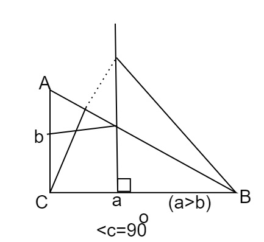
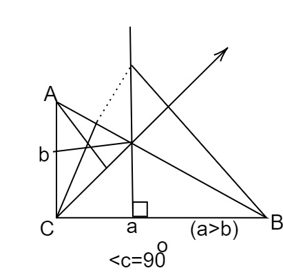
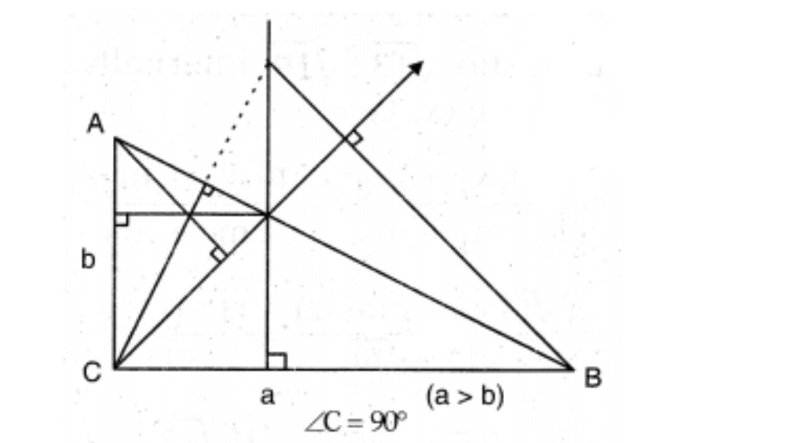
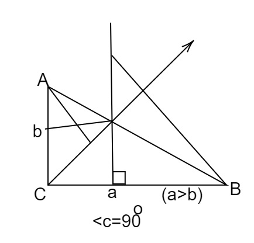

(Q4) A right triangle has sides 'a' and 'b' where a > b. If the right angle is bisected then find the distance between ortho centers of the smaller triangles using coordinate geometry.
Given:△ABC; angle B = 90°
The triangle is
(A)
(B)
(c)
(d)
check Answer
clear